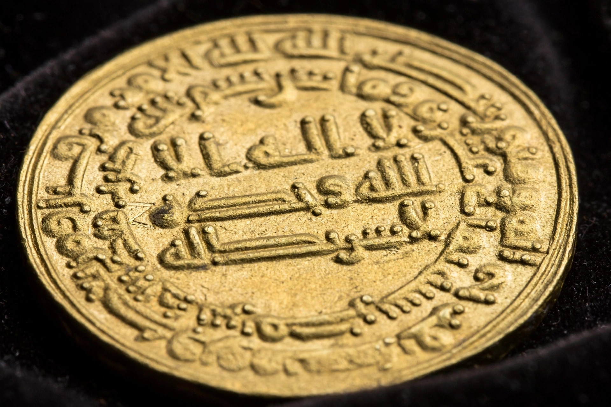

Al-Ma'mun
| Al-Ma'mun | |
|---|---|
| Caliph of the Abbasid Caliphate | Reign: 813 – 9 August 833 |
| Born | 14 September 786, Baghdad |
| Died | 9 August 833, near Tarsus, Cilicia |
| Father | Harun al-Rashid |
| Predecessor | Al-Amin |
| Successor | Al-Mu'tasim |

Abū al-ʿAbbās ʿAbd Allāh ibn Hārūn al-Rashīd (14 September 786 – 9 August 833), better known as al-Ma'mun, was the seventh Abbasid caliph, reigning from 813 until his death. The son of Harun al-Rashid, he won the throne in a civil war against his brother al-Amin, and his reign is remembered both for that fratricidal Fourth Fitna and for an extraordinary flowering of learning: al-Ma'mun expanded Baghdad's House of Wisdom (Bayt al-Hikma), sponsored the translation of Greek, Persian and Indian science into Arabic, funded astronomy, geography and mathematics — and controversially imposed the Mu'tazilite doctrine of the createdness of the Qur'an through the inquisition known as the mihna.
The civil war
Harun al-Rashid had arranged for al-Amin to succeed him, with al-Ma'mun as governor of Khurasan and second in line. After Harun's death in 809 the brothers' rivalry escalated into open war. Al-Ma'mun's general Tahir ibn Husayn defeated larger armies in the west, took Baghdad after a year-long siege in 813, and al-Amin was executed. Al-Ma'mun remained in Merv for several years, governing through his Persian vizier al-Fadl ibn Sahl, while revolts spread in Iraq and Arabia — including his controversial designation in 817 of the Alid imam Ali al-Rida as heir, an attempt at Sunni–Shi'a reconciliation that collapsed with al-Rida's death in 818. The caliph entered Baghdad in 819 and restored order.
Patron of learning
From Baghdad, al-Ma'mun lavishly patronised scholarship. The House of Wisdom, a library and translation institute founded under his father, reached its height, with translators such as Hunayn ibn Ishaq rendering Galen, Hippocrates, Euclid, Ptolemy and Aristotle into Arabic. The caliph corresponded with the Byzantine emperor requesting manuscripts, sent expeditions to verify the length of a degree of latitude (yielding an accurate value for the Earth's circumference), commissioned a world map and observatories in Baghdad and Damascus, and supported al-Khwarizmi, whose treatise on algebra (al-jabr) was dedicated to him and from whose name and book derive the words "algorithm" and "algebra".
The mihna and later reign
Adopting Mu'tazilite rationalist theology, al-Ma'mun in 833 instituted the mihna, requiring judges and scholars to affirm that the Qur'an was created rather than eternal. The inquisition, continued by his successors, made a hero of its most famous resister, Ahmad ibn Hanbal, and was abandoned only under al-Mutawakkil. Al-Ma'mun also campaigned personally against Byzantium in Cilicia and Cappadocia. He died in 833 near Tarsus during one such campaign — tradition says after eating dates and drinking cold water — and was succeeded by his brother al-Mu'tasim.
See also
Harun al-Rashid · House of Wisdom · Al-Khwarizmi · Fourth Fitna · Mihna